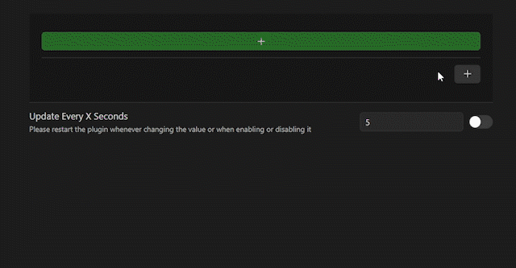
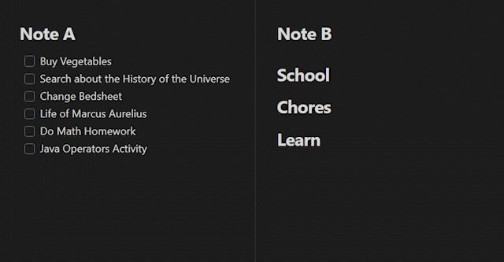

My Plugins in Obsidian

Colored Names
Have a script you want to organize more visually? The Colored Names Plugin color codes each line in your file depending on the speaker

Heading Transporter
Have a long list of things you want to do but it’s all scattered around without any organization? Is cut and pasting too tedious to properly organize your tasks into Headings? This plugin makes it quicker to organize tasks with only one hotkey